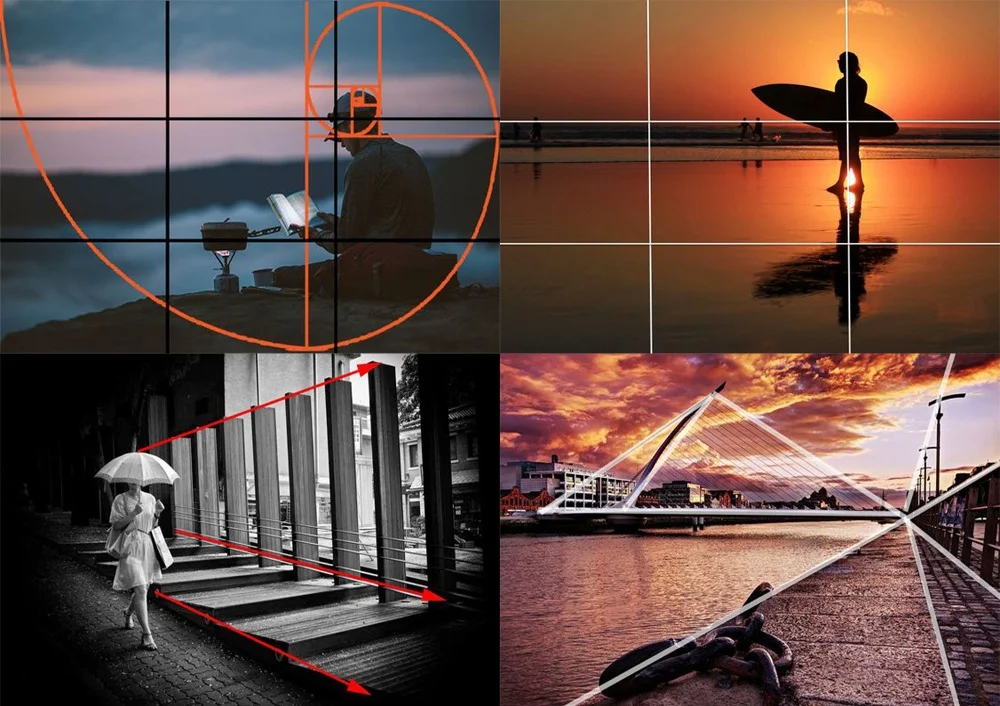

What's Composition?
By Logan Hindley
↩ Previous Page
→ Next Page
Composition is the art of framing a photo. Every photo has a composition, whether it be a subject
in the centre, on the right, with a 4/3 ratio, or without a subject to begin with. It is easy to learn how
composition works, and there are a few major parts to learn about it to easily control how your photo looks and
feels!
- Golden Ratio
-
- The golden ratio is a thing that exists naturally, and is the spiral formation in flowers, ammonites, snails
etc. It shows up in photography with framing, and it is a beautiful concept in nature that is especially nice
to
photograph.
- Leading Lines
-
- Leading lines are things that draw attention, like the circles of a tree trunk, showing its age, or the road
lines that guide your eyes to the end of the road. Leading lines are easy to find and quick to get eyes on a
photo!
- Rule of Thirds
-
- The rule of thirds is the most commonly used composition type, which involves putting a subject in one of
the
corners of the photo, but leaving a margin from the edge. Look below for a photo of this composition type, you
can set your camera to show a grid in the viewfinder to help with this!
- Centred
-
- This is a common, and easy composition type, and it involves centre placing your subject, and that is all.
Simple!
- Lots of Others!
-
-
Photography is a creative subject, and there is always a new way to create a unique photo, so go out and try
to
see what you can create!
